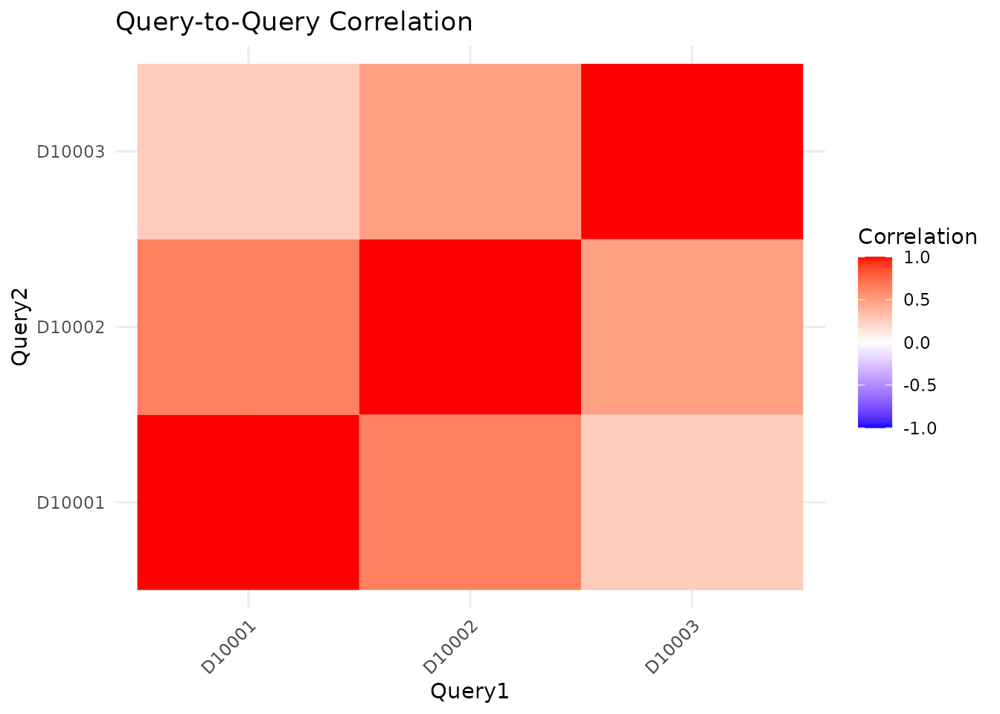

Overview
When you have multiple related signatures (e.g., biological replicates, time points, or related conditions), running them individually is inefficient. GPSA’s batch query feature:
- Runs multiple queries in a single matrix operation
- Computes query-to-query correlations
- Enables meta-analysis to find consensus hits
Setup
library(GPSA)
# Load database
db <- gpsa_load_db(preload_Z = TRUE, verbose = TRUE)
#> Preloading /Z into memory ...
#> Preloaded /Z (1062.9 MB) into RAM; subsequent queries avoid disk I/O.
#> Loaded DB: 19613 genes x 7103 signatures; Z_definition=cmap_rankZ_qnormPreparing Multiple Queries
Build Query List
# Create Up/Down query for each signature
queries <- list()
for (sid in sig_ids) {
gl <- gpsa_get_signature(db, sid, dataset = "logFC")
queries[[sid]] <- gpsa_make_updown_query(gl, n_each = 300)
}
# Preview query structure
message("Query names:")
#> Query names:
print(names(queries))
#> [1] "D10001" "D10002" "D10003"Running Batch Search
# Run all queries at once
bat <- gpsa_batch_search(db, queries, compute_tau = TRUE)
# View timing information
message("=== Batch Query Timing ===")
#> === Batch Query Timing ===
print(bat$timing)
#> $elapsed_sec
#> [1] 0.159
#>
#> $union_size
#> [1] 1581
#>
#> $block_s
#> NULLBatch Results Structure
# The result contains:
# - Score: matrix of scores (signatures x queries)
# - tau: matrix of tau scores
# - z_ref: matrix of z-scores for meta-analysis
# - timing: execution time
message(sprintf("Score matrix dimensions: %d signatures x %d queries",
nrow(bat$Score), ncol(bat$Score)))
#> Score matrix dimensions: 7103 signatures x 3 queries
message("Query names:")
#> Query names:
print(colnames(bat$Score))
#> [1] "D10001" "D10002" "D10003"View Results for Each Query
# Get results for a specific query
query_name <- names(queries)[1]
scores_q1 <- bat$Score[, query_name]
# Sort to get top hits for this query
top_q1 <- sort(scores_q1, decreasing = TRUE)[1:10]
message(sprintf("=== Top 10 for Query: %s ===", query_name))
#> === Top 10 for Query: D10001 ===
print(top_q1)
#> D10001 D20051 D10711 D20052 D26347 D20335 D21099 D20905
#> 87.20900 87.20900 44.91229 44.91229 43.21641 31.79750 27.91390 27.12615
#> D25182 D26149
#> 26.74011 25.86339Query-to-Query Correlation
Understanding how similar your queries are helps interpret the results.
# Compute correlation between query results
cor_mat <- cor(bat$Score, use = "pairwise.complete.obs")
message("=== Query Similarity Matrix ===")
#> === Query Similarity Matrix ===
print(round(cor_mat, 3))
#> D10001 D10002 D10003
#> D10001 1.000 0.638 0.270
#> D10002 0.638 1.000 0.491
#> D10003 0.270 0.491 1.000Meta-analysis: Stouffer’s Method
When queries represent related conditions, combine their results to find consensus hits.
# Stouffer's method combines z-scores across queries
meta_res <- gpsa_meta_stouffer(bat$z_ref)
# View meta-analysis results
message("=== Meta-analysis Top 20 ===")
#> === Meta-analysis Top 20 ===
print(head(meta_res[, c("signature_id", "z_meta", "p_meta", "FDR_meta")], 20))
#> signature_id z_meta p_meta FDR_meta
#> 3 D10003 8.385908 5.033589e-17 3.575358e-13
#> 2 D10002 8.171812 3.037918e-16 1.078917e-12
#> 1 D10001 7.754474 8.871019e-15 1.575271e-11
#> 869 D20051 7.754474 8.871019e-15 1.575271e-11
#> 241 D10241 7.009264 2.395748e-12 3.403400e-09
#> 163 D10163 6.752798 1.450213e-11 1.716810e-08
#> 123 D10123 6.541986 6.070722e-11 6.160048e-08
#> 79 D10079 6.425545 1.313983e-10 1.166652e-07
#> 169 D10169 6.369438 1.897216e-10 1.497325e-07
#> 276 D10276 6.260213 3.844512e-10 2.730757e-07
#> 102 D10102 6.157218 7.403390e-10 4.780571e-07
#> 10 D10010 6.129217 8.831253e-10 5.227366e-07
#> 6 D10006 6.062284 1.342024e-09 7.332612e-07
#> 266 D10266 5.969460 2.380401e-09 1.138801e-06
#> 315 D10315 5.967789 2.404900e-09 1.138801e-06
#> 44 D10044 5.915715 3.304368e-09 1.383820e-06
#> 188 D10188 5.913941 3.340184e-09 1.383820e-06
#> 216 D10216 5.905922 3.506794e-09 1.383820e-06
#> 218 D10218 5.876823 4.182144e-09 1.563462e-06
#> 29 D10029 5.830931 5.511908e-09 1.864337e-06Understanding Meta-analysis Output
| Column | Description |
|---|---|
z_meta |
Combined z-score (Stouffer’s method) |
p_meta |
P-value from combined z-score |
FDR_meta |
False discovery rate (BH correction) |
Interpretation: - High z_meta:
Consistently high-scoring across all queries - Low
FDR_meta: Statistically significant consensus hit
Finding Consensus Hits
# Define consensus: significant in meta-analysis
consensus <- meta_res[meta_res$FDR_meta < 0.05, ]
consensus <- consensus[order(consensus$z_meta, decreasing = TRUE), ]
message(sprintf("=== Consensus Hits (FDR < 0.05): %d ===", nrow(consensus)))
#> === Consensus Hits (FDR < 0.05): 180 ===
if (nrow(consensus) > 0) {
print(head(consensus, 20))
}
#> signature_id z_meta p_meta FDR_meta
#> 3 D10003 8.385908 5.033589e-17 3.575358e-13
#> 2 D10002 8.171812 3.037918e-16 1.078917e-12
#> 1 D10001 7.754474 8.871019e-15 1.575271e-11
#> 869 D20051 7.754474 8.871019e-15 1.575271e-11
#> 241 D10241 7.009264 2.395748e-12 3.403400e-09
#> 163 D10163 6.752798 1.450213e-11 1.716810e-08
#> 123 D10123 6.541986 6.070722e-11 6.160048e-08
#> 79 D10079 6.425545 1.313983e-10 1.166652e-07
#> 169 D10169 6.369438 1.897216e-10 1.497325e-07
#> 276 D10276 6.260213 3.844512e-10 2.730757e-07
#> 102 D10102 6.157218 7.403390e-10 4.780571e-07
#> 10 D10010 6.129217 8.831253e-10 5.227366e-07
#> 6 D10006 6.062284 1.342024e-09 7.332612e-07
#> 266 D10266 5.969460 2.380401e-09 1.138801e-06
#> 315 D10315 5.967789 2.404900e-09 1.138801e-06
#> 44 D10044 5.915715 3.304368e-09 1.383820e-06
#> 188 D10188 5.913941 3.340184e-09 1.383820e-06
#> 216 D10216 5.905922 3.506794e-09 1.383820e-06
#> 218 D10218 5.876823 4.182144e-09 1.563462e-06
#> 29 D10029 5.830931 5.511908e-09 1.864337e-06Compare Individual vs Meta Results
# Check if a hit is consistent across queries
if (nrow(consensus) > 0) {
candidate <- consensus$signature_id[1]
# Get individual scores
individual_scores <- bat$Score[candidate, ]
message(sprintf("=== Individual Scores for %s ===", candidate))
print(individual_scores)
# Get individual tau scores
individual_tau <- bat$tau[candidate, ]
message("=== Individual Tau Scores ===")
print(individual_tau)
}
#> === Individual Scores for D10003 ===
#> D10001 D10002 D10003
#> 13.32977 38.95861 87.20900
#> === Individual Tau Scores ===
#> D10001 D10002 D10003
#> 83.90821 99.39462 99.98592Batch Query with Different Query Types
You can mix different query types in a batch:
# Prepare mixed queries
# Note: Each query in the list should be a valid query format
mixed_queries <- list(
# Up/Down query from first signature
UD_query = gpsa_make_updown_query(
gpsa_get_signature(db, sig_ids[1], dataset = "logFC"),
n_each = 300
),
# Single gene set query (example with TP53 pathway genes)
TP53_query = list(
TP53 = list(
genes = c("TP53", "MDM2", "CDKN1A", "BAX", "BBC3", "PUMA"),
sign = +1
)
)
)
# Run mixed batch
bat_mixed <- gpsa_batch_search(db, mixed_queries, compute_tau = TRUE)
message("=== Mixed Batch Query Timing ===")
print(bat_mixed$timing)Visualizing Query Relationships
# Heatmap of query correlations (if ggplot2 available)
if (requireNamespace("ggplot2", quietly = TRUE)) {
library(ggplot2)
# Melt correlation matrix for plotting
cor_df <- as.data.frame(as.table(cor_mat))
names(cor_df) <- c("Query1", "Query2", "Correlation")
print(
ggplot(cor_df, aes(Query1, Query2, fill = Correlation)) +
geom_tile() +
scale_fill_gradient2(low = "blue", mid = "white", high = "red",
midpoint = 0, limits = c(-1, 1)) +
theme_minimal() +
theme(axis.text.x = element_text(angle = 45, hjust = 1)) +
labs(title = "Query-to-Query Correlation")
)
}
Heatmap showing correlation between query results.
Performance Considerations
Best Practices
- Group related queries: Batch queries that make biological sense together
- Check correlations first: Highly correlated queries may not add information
- Use meta-analysis for consensus: Stouffer’s method finds robust hits
- Validate consensus hits: They’re more likely to be biologically meaningful
- Consider weights: If query reliability varies, use weighted meta-analysis
Summary
| Task | Function |
|---|---|
| Batch search | gpsa_batch_search(db, queries) |
| Query correlation | cor(bat$Score) |
| Meta-analysis | gpsa_meta_stouffer(bat$z_ref) |
Session Info
sessionInfo()
#> R version 4.3.2 (2023-10-31)
#> Platform: x86_64-pc-linux-gnu (64-bit)
#> Running under: Ubuntu 22.04.2 LTS
#>
#> Matrix products: default
#> BLAS: /usr/lib/x86_64-linux-gnu/openblas-pthread/libblas.so.3
#> LAPACK: /usr/lib/x86_64-linux-gnu/openblas-pthread/libopenblasp-r0.3.20.so; LAPACK version 3.10.0
#>
#> locale:
#> [1] LC_CTYPE=C.UTF-8 LC_NUMERIC=C LC_TIME=C.UTF-8
#> [4] LC_COLLATE=C.UTF-8 LC_MONETARY=C.UTF-8 LC_MESSAGES=C.UTF-8
#> [7] LC_PAPER=C.UTF-8 LC_NAME=C LC_ADDRESS=C
#> [10] LC_TELEPHONE=C LC_MEASUREMENT=C.UTF-8 LC_IDENTIFICATION=C
#>
#> time zone: Asia/Shanghai
#> tzcode source: system (glibc)
#>
#> attached base packages:
#> [1] stats graphics grDevices utils datasets methods base
#>
#> other attached packages:
#> [1] ggplot2_3.4.4 GPSA_0.1.0
#>
#> loaded via a namespace (and not attached):
#> [1] Matrix_1.6-4 gtable_0.3.4 jsonlite_1.8.8
#> [4] highr_0.10 dplyr_1.1.4 compiler_4.3.2
#> [7] tidyselect_1.2.0 stringr_1.5.1 rhdf5filters_1.14.1
#> [10] jquerylib_0.1.4 systemfonts_1.0.5 scales_1.3.0
#> [13] textshaping_0.3.7 yaml_2.3.8 fastmap_1.1.1
#> [16] lattice_0.22-5 R6_2.5.1 labeling_0.4.3
#> [19] generics_0.1.3 knitr_1.45 tibble_3.2.1
#> [22] desc_1.4.3 munsell_0.5.0 pillar_1.9.0
#> [25] bslib_0.6.1 rlang_1.1.2 utf8_1.2.4
#> [28] cachem_1.0.8 stringi_1.8.3 xfun_0.41
#> [31] fs_1.6.3 sass_0.4.8 memoise_2.0.1
#> [34] cli_3.6.2 withr_2.5.2 pkgdown_2.0.7
#> [37] magrittr_2.0.3 Rhdf5lib_1.24.1 digest_0.6.33
#> [40] grid_4.3.2 rhdf5_2.46.1 lifecycle_1.0.4
#> [43] vctrs_0.6.5 evaluate_0.23 glue_1.6.2
#> [46] farver_2.1.1 ragg_1.2.7 fansi_1.0.6
#> [49] colorspace_2.1-0 rmarkdown_2.25 purrr_1.0.2
#> [52] pkgconfig_2.0.3 tools_4.3.2 htmltools_0.5.7